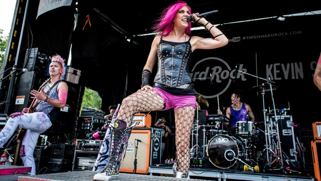

<!DOCTYPE html>
<html>
  <head>
    <head>
     <!-- Compiled and minified CSS -->
    <link rel="stylesheet" href="https://cdnjs.cloudflare.com/ajax/libs/materialize/1.0.0/css/materialize.min.css">
    <link rel="stylesheet" href="./style.css">
    
       <!--Import materialize.css-->
       <link
       type="text/css"
       rel="stylesheet"
       href="css/materialize.min.css"
       media="screen,projection"
     />
    <!--Import Google Icon Font-->
    <link
      href="https://fonts.googleapis.com/icon?family=Material+Icons"
      rel="stylesheet"
    />
    <meta name="viewport" content="width=device-width, initial-scale=1.0" />
    <body></body>
  </head>
</html>

<nav>
    <div class="nav-wrapper">
      <a href="#!" class="brand-logo">Logo</a>
      <a href="#" data-target="mobile-demo" class="sidenav-trigger"
        ><i class="material-icons">menu</i></a
      >
      <ul class="right hide-on-med-and-down">
        <li><a href="index.html">Home</a></li>
        <li><a href="about.html">About</a></li>
        <li><a href="albums.html">Albums</a></li>
        <li><a href="musicvideo.html">Music Videos</a></li>
        <li><a href="tours.html">Tour</a></li>
      </ul>
    </div>
  </nav>

<center><h1>About The Band</h1></center>

  <div class="container">
    <div class="row">
      
      <div class="col s12 m6">
        <h3>The Band</h3>
   <p>Icon For Hire was founded in Dacatur Illnois. Ariel Bloomer and Shawn Jump initally just started as a simple garage band. When another drummer was needed Shawn recruited a friend, Adam Kronshshagen. The band became official in November 2007. They began thier music in small clubs and bars before expanding across the United States.</p>
      </div>
  
      
      <div class="col s12 m6">
      
    </div>
  </div>


  <div class="container">
    <div class="row">
      
      <div class="col s12 m6">
        <h3>Ariel Bloomer</h3>
   <p>Ariel is the lead singer for Icon for Hire</p>
      </div>
      
      <div class="col s12 m6">
        <h3>Shawn Jump</h3>
     Shawn is the bass guitarist and the official owner of the Icon For Hire brand name.
    </div>
  </div>
    <!--Compiled and minifed jQuery -->
    <script src="https://ajax.googleapis.com/ajax/libs/jquery/2.2.4/jquery.min.js"></script>

    <script>
      $(document).ready(function () {
        $(".sidenav").sidenav();
      });
    </script>
    <!-- Compiled and minified JavaScript -->
    <script src="https://cdnjs.cloudflare.com/ajax/libs/materialize/1.0.0/js/materialize.min.js"></script>
  </body>


</html>


